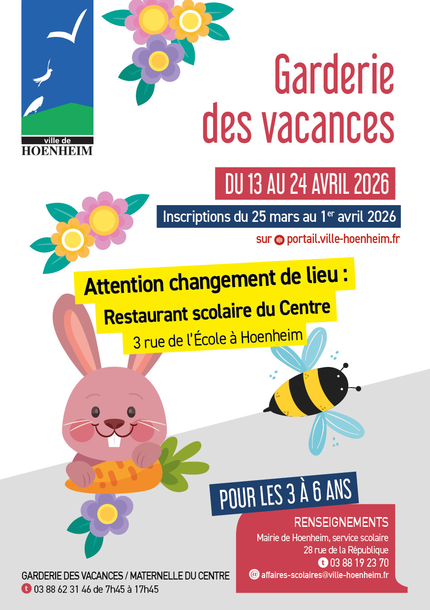

- Cet événement est terminé
Garderie : programme des vacances de printemps
25 mars à 7 h 45 min - 1 avril à 17 h 45 min
Navigation de l'événement

Le programme des vacances de printemps est disponible ci-dessous, pour plus d’informations, cliquez ici.
Attention à partir du mois d’avril 2026 et pendant les travaux à l’école maternelle Ried CHANGEMENT DE LIEU pour la garderie des vacances. NOUVEAU LIEU : Périscolaire de l’école du Centre
3 rue de l’École à Hoenheim.
La garderie des vacances de printemps 2026 se déroulera du lundi 13 au vendredi 24 avril 2026.
Programme de la garderie des vacances de printemps 2026 à Hoenheim.
Les inscriptions se font du 25 mars au 1er avril 2026 sur le Portail Familles : portail.ville-hoenheim.fr